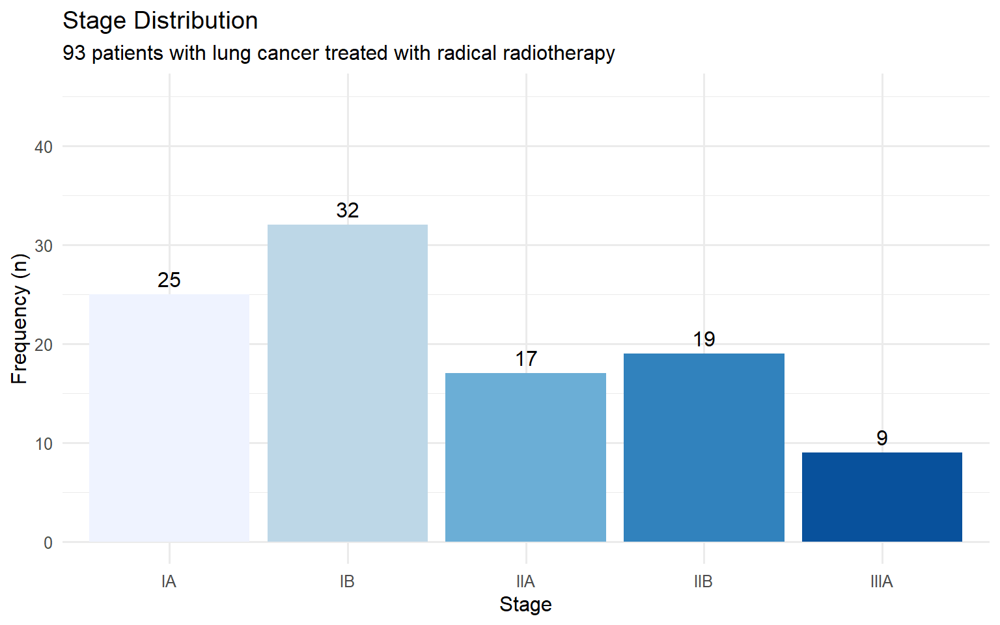
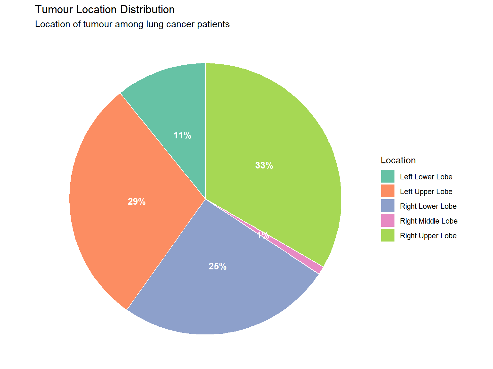

“Statistics…is the core science of evidence-based practice” — Martin Bland
Statistics is the science of:
Collecting data
Summarising data
Presenting data
Interpreting data
1.2 Learning Objectives
By the end of this tutorial, you will be able to:
Present and summarise individual variables
Recognise categorical data (nominal, ordinal)
Recognise discrete and continuous numerical data
Recognise symmetric and skewed distributions
Describe the normal distribution
Interpret bar charts and histograms
Define and apply measures of central tendency and spread
1.3 Descriptive Statistics
Descriptive statistics involves summarising and presenting data. This is essential because it:
Allows us to get “a feel” for the data
Must be done before any inferential analysis
Helps form subjective impressions of answers to research questions
2 Loading the Data
Throughout this tutorial, we will use a dataset of 102 patients with non-small cell lung cancer (NSCLC) treated with stereotactic ablative radiotherapy (SABR).
Show code
# Load patient data from Excel filepatients <-read_excel("data/nsclc_patient_data.xlsx")# View the first few rowspatients |>head(10) |>gt() |>tab_header(title ="NSCLC Patient Dataset",subtitle ="First 10 observations" )
NSCLC Patient Dataset
First 10 observations
patient_id
age
sex
stage
tumour_location
performance_status
tumour_size_cm
suv_max
height_m
weight_kg
neutrophil_count
lymphocyte_count
brain_metastases
status_2yr
bmi
nlr
age_group
1
81
Male
IIB
Right Lower Lobe
1
2.7
10.5
1.70
89.5
5.2
1.7
1
Dead
31.0
3.06
80+
2
76
Female
IB
Right Lower Lobe
1
3.7
12.6
1.65
62.9
6.0
1.5
1
Alive
23.1
4.00
70-79
3
71
Female
IA
Left Upper Lobe
2
3.0
16.3
1.55
65.3
5.6
0.6
1
Dead
27.2
9.33
70-79
4
70
Female
IIB
Right Upper Lobe
0
4.4
9.2
1.68
93.2
6.5
1.6
3
Alive
33.0
4.06
70-79
5
82
Female
IA
Left Upper Lobe
1
3.3
13.2
1.58
75.5
7.3
1.8
2
Alive
30.2
4.06
80+
6
84
Male
IA
Right Upper Lobe
1
1.2
12.8
1.93
74.1
5.3
1.7
1
Alive
19.9
3.12
80+
7
77
Male
IB
Right Upper Lobe
0
0.9
12.8
1.75
80.6
4.1
1.1
3
Alive
26.3
3.73
70-79
8
71
Male
IB
Right Lower Lobe
2
1.8
9.2
1.76
91.5
4.4
3.0
1
Alive
29.5
1.47
70-79
9
61
Female
IB
Right Lower Lobe
1
6.3
3.0
1.60
59.7
1.7
3.0
3
Dead
23.3
0.57
60-69
10
62
Female
IA
Right Upper Lobe
3
2.3
4.5
1.47
67.6
6.9
1.6
3
Alive
31.3
4.31
60-69
2.1 Dataset Structure
A collection of data is called a dataset. It contains information on subjects we are interested in. For computer analysis, data must have a clear structure where:
Each row represents an individual observation (patient)
Each column represents a variable (characteristic)
A frequency distribution table lists data values and how often each occurs.
Show code
patients |>count(stage, name ="n_patients") |>mutate(percent =round(100* n_patients /sum(n_patients), 1)) |>arrange(stage) |>adorn_totals("row") |>gt() |>tab_header(title ="Frequency Distribution of Cancer Stage")
Frequency Distribution of Cancer Stage
stage
n_patients
percent
IA
25
24.5
IB
32
31.4
IIA
17
16.7
IIB
19
18.6
IIIA
9
8.8
Total
102
100.0
The most frequent category is called the mode. Percentages can also be expressed as proportions (e.g., 0.35 instead of 35%).
4.1.2 Bar Charts
Bar charts display the frequency of categorical data with gaps between bars.
Show code
patients |>count(stage) |>ggplot(aes(x = stage, y = n, fill = stage)) +geom_col(show.legend =FALSE) +geom_text(aes(label = n), vjust =-0.5) +labs(title ="Stage Distribution",subtitle ="93 patients with lung cancer treated with radical radiotherapy",x ="Stage",y ="Frequency (n)" ) +scale_fill_brewer(palette ="Blues") +ylim(0, 45)

4.1.3 Pie Charts
Pie charts show proportions of a whole (best used for nominal data with few categories).
Show code
patients |>count(tumour_location) |>mutate(percent =round(100* n /sum(n), 0),label =paste0(tumour_location, "\n(", percent, "%)") ) |>ggplot(aes(x ="", y = n, fill = tumour_location)) +geom_col(width =1, colour ="white") +coord_polar(theta ="y") +geom_text(aes(label =paste0(percent, "%")),position =position_stack(vjust =0.5),colour ="white", fontface ="bold") +labs(title ="Tumour Location Distribution",subtitle ="Location of tumour among lung cancer patients",fill ="Location" ) +theme_void() +scale_fill_brewer(palette ="Set2")

4.1.4 Contingency Tables
Contingency tables show the relationship between two categorical variables.
Box plots (box-and-whisker plots) summarise the distribution showing:
Median (middle line)
Interquartile range (IQR) (box = Q1 to Q3)
Whiskers (extend to 1.5 × IQR)
Outliers (points beyond whiskers)
Show code
# Create annotated boxplotbp_data <-tibble(group ="A",value =c(1, 2, 3, 4, 5, 6, 7, 8, 9, 10, 15))ggplot(bp_data, aes(x = group, y = value)) +geom_boxplot(fill ="lightblue", width =0.3) +annotate("text", x =1.25, y =median(bp_data$value), label ="Median", hjust =0) +annotate("text", x =1.25, y =quantile(bp_data$value, 0.75), label ="Q3 (75th percentile)", hjust =0) +annotate("text", x =1.25, y =quantile(bp_data$value, 0.25), label ="Q1 (25th percentile)", hjust =0) +annotate("text", x =1.25, y =15, label ="Outlier", hjust =0) +labs(title ="Anatomy of a Box Plot",y ="Value" ) +theme(axis.text.x =element_blank(),axis.title.x =element_blank())
Show code
ggplot(patients, aes(x = sex, y = nlr, fill = sex)) +geom_boxplot(show.legend =FALSE) +labs(title ="Neutrophil-Lymphocyte Ratio by Sex",subtitle ="102 patients with NSCLC prior to treatment with SABR",x =NULL,y ="Neutrophil-Lymphocyte Ratio" ) +scale_fill_brewer(palette ="Set2")
4.2.5 Scatter Plots
Show the relationship between two continuous variables.
Show code
ggplot(patients, aes(x = neutrophil_count, y = lymphocyte_count)) +geom_point(colour ="steelblue", alpha =0.7, size =2) +labs(title ="Blood Counts",subtitle ="102 patients with NSCLC prior to treatment with SABR",x ="Neutrophil Count (×10⁹/L)",y ="Lymphocyte Count (×10⁹/L)" )
4.3 Summary: Graphics for Different Data Types
Data Type
Suitable Graphics
Continuous
Histograms, box plots, scatter plots, dot plots
Categorical (Nominal)
Bar charts, pie charts, frequency tables
Categorical (Ordinal)
Bar charts, frequency tables
Two categorical variables
Contingency tables, clustered/stacked bar charts
Two continuous variables
Scatter plots
5 Measures of Central Tendency
Measures of central tendency (or “location”) describe the centre or “average” of the data.
5.1 Mean
The arithmetic mean is the sum of all values divided by the number of observations.
The Royal College of Radiologists. Clinical Oncology Curriculum 2021: Medical Statistics Module.
Tutorial created for the FRCR Medical Statistics Module
Source Code
---title: "Descriptive Statistics"subtitle: "FRCR Medical Statistics Module"author: "Scottish Oncology Course"date: todayformat: html: theme: cosmo toc: true toc-depth: 3 toc-location: left code-fold: true code-summary: "Show code" code-tools: true number-sections: true smooth-scroll: true df-print: kableexecute: echo: true warning: false message: false---```{r}#| label: setup#| include: false# Package installation functioninstall_if_missing <-function(pkg) {if (!requireNamespace(pkg, quietly =TRUE)) {# Try pak first, then fall back to install.packagesif (requireNamespace("pak", quietly =TRUE)) { pak::pak(pkg, ask =FALSE) } else {install.packages(pkg, repos ="https://cloud.r-project.org") } }}# Core packagespackages <-c("tidyverse", "readxl", "gt", "gtsummary", "patchwork", "scales", "janitor")# Attempt to load packages (install if needed in your environment)suppressPackageStartupMessages({library(tidyverse)library(readxl)library(gt)library(gtsummary)library(patchwork)library(scales)library(janitor)})# Set ggplot themetheme_set(theme_minimal(base_size =12))``````{r}#| label: generate-data#| include: false# This chunk generates synthetic data silently# The data is saved as Excel file in the data folder# In your environment, this runs once to create the dataset.seed(2024)n_patients <-102patient_data <-tibble(patient_id =1:n_patients,age =round(rnorm(n_patients, mean =72, sd =9)),sex =sample(c("Female", "Male"), n_patients, replace =TRUE, prob =c(0.59, 0.41)),stage =sample(c("IA", "IB", "IIA", "IIB", "IIIA"), n_patients, replace =TRUE, prob =c(0.35, 0.30, 0.15, 0.12, 0.08)),tumour_location =sample(c("Left Upper Lobe", "Left Lower Lobe", "Right Upper Lobe", "Right Lower Lobe", "Right Middle Lobe"), n_patients, replace =TRUE,prob =c(0.38, 0.11, 0.30, 0.20, 0.01) ),performance_status =sample(0:3, n_patients, replace =TRUE, prob =c(0.25, 0.45, 0.25, 0.05)),tumour_size_cm =round(abs(rnorm(n_patients, mean =2.8, sd =1.2)), 1),suv_max =round(abs(rnorm(n_patients, mean =8.8, sd =5.4)), 1),height_m =round(ifelse(sex =="Female", rnorm(n_patients, 1.62, 0.07),rnorm(n_patients, 1.75, 0.08)), 2),weight_kg =round(ifelse(sex =="Female",rnorm(n_patients, 68, 14),rnorm(n_patients, 82, 15)), 1),neutrophil_count =round(abs(rnorm(n_patients, mean =5.2, sd =2.1)), 1),lymphocyte_count =round(abs(rnorm(n_patients, mean =1.8, sd =0.7)), 1),brain_metastases =sample(c(1, 2, 3), n_patients, replace =TRUE, prob =c(0.59, 0.125, 0.285)),status_2yr =sample(c("Alive", "Dead"), n_patients, replace =TRUE, prob =c(0.75, 0.25))) |>mutate(bmi =round(weight_kg / (height_m^2), 1),nlr =round(neutrophil_count / lymphocyte_count, 2),age_group =cut(age, breaks =c(0, 59, 69, 79, 100),labels =c("<60", "60-69", "70-79", "80+")) )# Save to Excel file (requires writexl package)if (!dir.exists("data")) dir.create("data")if (requireNamespace("writexl", quietly =TRUE)) { writexl::write_xlsx(patient_data, "data/nsclc_patient_data.xlsx")}```# Introduction## What is Statistics?> *"Statistics...is the core science of evidence-based practice"* — Martin BlandStatistics is the science of:- **Collecting** data- **Summarising** data- **Presenting** data- **Interpreting** data## Learning ObjectivesBy the end of this tutorial, you will be able to:- Present and summarise individual variables- Recognise categorical data (nominal, ordinal)- Recognise discrete and continuous numerical data- Recognise symmetric and skewed distributions- Describe the normal distribution- Interpret bar charts and histograms- Define and apply measures of central tendency and spread## Descriptive StatisticsDescriptive statistics involves summarising and presenting data. This is essential because it:- Allows us to get "a feel" for the data- Must be done before any inferential analysis- Helps form subjective impressions of answers to research questions# Loading the DataThroughout this tutorial, we will use a dataset of 102 patients with non-small cell lung cancer (NSCLC) treated with stereotactic ablative radiotherapy (SABR).```{r}#| label: load-data# Load patient data from Excel filepatients <-read_excel("data/nsclc_patient_data.xlsx")# View the first few rowspatients |>head(10) |>gt() |>tab_header(title ="NSCLC Patient Dataset",subtitle ="First 10 observations" )```## Dataset StructureA collection of data is called a **dataset**. It contains information on subjects we are interested in. For computer analysis, data must have a clear structure where:- Each **row** represents an individual observation (patient)- Each **column** represents a variable (characteristic)```{r}#| label: data-structure# Examine the structureglimpse(patients)```# Types of DataTo produce descriptive statistics appropriately requires knowledge of different data types. Broadly, data are either **numerical** or **categorical**.## Categorical DataCategorical (qualitative) data tells us which category an individual belongs to.### Nominal DataCategories with no natural ordering.```{r}#| label: nominal-examplepatients |>count(tumour_location) |>gt() |>tab_header(title ="Tumour Location (Nominal Variable)")```### Ordinal DataCategories with a natural ordering.```{r}#| label: ordinal-examplepatients |>count(stage) |>arrange(stage) |>gt() |>tab_header(title ="Cancer Stage (Ordinal Variable)")```### Binary (Dichotomous) DataA categorical variable with only two categories (e.g., alive or dead). Sometimes coded as 0 and 1.```{r}#| label: binary-examplepatients |>count(status_2yr) |>mutate(proportion = n /sum(n)) |>gt() |>tab_header(title ="Two-Year Survival Status (Binary Variable)") |>fmt_percent(proportion, decimals =1)```## Numerical Data### Discrete DataCan only take specific values (usually whole numbers).```{r}#| label: discrete-examplepatients |>count(brain_metastases) |>mutate(brain_metastases =case_when( brain_metastases ==1~"1", brain_metastases ==2~"2", brain_metastases ==3~"3 or more" ) ) |>gt() |>tab_header(title ="Number of Brain Metastases (Discrete Variable)")```### Continuous DataCan take any value within a range (infinitely divisible).```{r}#| label: continuous-examplepatients |>select(patient_id, age, height_m, weight_kg, tumour_size_cm, suv_max) |>head(8) |>gt() |>tab_header(title ="Examples of Continuous Variables")```## Summary: Data Types| Data Type | Description | Examples ||-----------|-------------|----------|| **Nominal** | Categories without order | Tumour location, Sex || **Ordinal** | Categories with order | Stage, Performance status || **Discrete** | Countable numbers | Number of metastases || **Continuous** | Measurable values | Age, Height, SUVmax |# Graphics for Data Visualisation## Visualising Categorical Data### Frequency TablesA frequency distribution table lists data values and how often each occurs.```{r}#| label: freq-tablepatients |>count(stage, name ="n_patients") |>mutate(percent =round(100* n_patients /sum(n_patients), 1)) |>arrange(stage) |>adorn_totals("row") |>gt() |>tab_header(title ="Frequency Distribution of Cancer Stage")```The most frequent category is called the **mode**. Percentages can also be expressed as proportions (e.g., 0.35 instead of 35%).### Bar ChartsBar charts display the frequency of categorical data with gaps between bars.```{r}#| label: bar-chart#| fig-width: 8#| fig-height: 5patients |>count(stage) |>ggplot(aes(x = stage, y = n, fill = stage)) +geom_col(show.legend =FALSE) +geom_text(aes(label = n), vjust =-0.5) +labs(title ="Stage Distribution",subtitle ="93 patients with lung cancer treated with radical radiotherapy",x ="Stage",y ="Frequency (n)" ) +scale_fill_brewer(palette ="Blues") +ylim(0, 45)```### Pie ChartsPie charts show proportions of a whole (best used for nominal data with few categories).```{r}#| label: pie-chart#| fig-width: 8#| fig-height: 6patients |>count(tumour_location) |>mutate(percent =round(100* n /sum(n), 0),label =paste0(tumour_location, "\n(", percent, "%)") ) |>ggplot(aes(x ="", y = n, fill = tumour_location)) +geom_col(width =1, colour ="white") +coord_polar(theta ="y") +geom_text(aes(label =paste0(percent, "%")),position =position_stack(vjust =0.5),colour ="white", fontface ="bold") +labs(title ="Tumour Location Distribution",subtitle ="Location of tumour among lung cancer patients",fill ="Location" ) +theme_void() +scale_fill_brewer(palette ="Set2")```### Contingency TablesContingency tables show the relationship between two categorical variables.```{r}#| label: contingency-table# Create contingency tablecont_table <- patients |>count(sex, status_2yr) |>pivot_wider(names_from = sex, values_from = n) |>mutate(Total = Female + Male)# Add row percentagescont_table_pct <- patients |>group_by(sex) |>count(status_2yr) |>mutate(pct =round(100* n /sum(n), 0),cell =paste0(n, " (", pct, "%)") ) |>select(-n, -pct) |>pivot_wider(names_from = sex, values_from = cell)cont_table_pct |>gt() |>tab_header(title ="Two-Year Survival by Sex",subtitle ="Column percentages shown" )```### Clustered Bar ChartsCompare two categorical variables side by side.```{r}#| label: clustered-bar#| fig-width: 8#| fig-height: 5patients |>count(sex, status_2yr) |>ggplot(aes(x = sex, y = n, fill = status_2yr)) +geom_col(position ="dodge") +geom_text(aes(label = n), position =position_dodge(width =0.9), vjust =-0.5) +labs(title ="Two-Year Survival Status by Sex",subtitle ="102 patients with NSCLC treated with SABR",x ="Sex",y ="Frequency (n)",fill ="Status" ) +scale_fill_brewer(palette ="Set1") +ylim(0, 55)```### Stacked Bar Charts```{r}#| label: stacked-bar#| fig-width: 8#| fig-height: 5patients |>count(sex, status_2yr) |>group_by(sex) |>mutate(pct = n /sum(n)) |>ggplot(aes(x = sex, y = pct, fill = status_2yr)) +geom_col() +geom_text(aes(label = scales::percent(pct, accuracy =1)), position =position_stack(vjust =0.5),colour ="white", fontface ="bold") +labs(title ="Two-Year Survival Status by Sex (Percentage)",subtitle ="102 patients with NSCLC treated with SABR",x ="Sex",y ="Proportion",fill ="Status" ) +scale_y_continuous(labels = percent) +scale_fill_brewer(palette ="Set1")```## Visualising Numerical Data### HistogramsHistograms show the distribution of continuous data. Unlike bar charts, bars are adjacent (no gaps).```{r}#| label: histogram#| fig-width: 8#| fig-height: 5ggplot(patients, aes(x = height_m)) +geom_histogram(binwidth =0.05, fill ="steelblue", colour ="white") +labs(title ="Distribution of Patient Height",subtitle ="102 patients with NSCLC",x ="Height (m)",y ="Frequency" )```### Histograms by Group```{r}#| label: histogram-grouped#| fig-width: 10#| fig-height: 5ggplot(patients, aes(x = height_m, fill = sex)) +geom_histogram(binwidth =0.05, colour ="white", alpha =0.7) +facet_wrap(~sex) +labs(title ="Distribution of Height by Sex",x ="Height (m)",y ="Frequency" ) +scale_fill_brewer(palette ="Set1") +theme(legend.position ="none")```### Dot PlotsUseful for small datasets or comparing before/after measurements.```{r}#| label: dotplot#| fig-width: 8#| fig-height: 5patients |>slice_head(n =30) |>ggplot(aes(x = suv_max)) +geom_dotplot(binwidth =1, fill ="steelblue") +labs(title ="SUVmax Distribution",subtitle ="PET scan measurements (subset of patients)",x ="SUVmax",y =NULL ) +theme(axis.text.y =element_blank(),axis.ticks.y =element_blank())```### Box PlotsBox plots (box-and-whisker plots) summarise the distribution showing:- **Median** (middle line)- **Interquartile range (IQR)** (box = Q1 to Q3)- **Whiskers** (extend to 1.5 × IQR)- **Outliers** (points beyond whiskers)```{r}#| label: boxplot-anatomy#| fig-width: 8#| fig-height: 6# Create annotated boxplotbp_data <-tibble(group ="A",value =c(1, 2, 3, 4, 5, 6, 7, 8, 9, 10, 15))ggplot(bp_data, aes(x = group, y = value)) +geom_boxplot(fill ="lightblue", width =0.3) +annotate("text", x =1.25, y =median(bp_data$value), label ="Median", hjust =0) +annotate("text", x =1.25, y =quantile(bp_data$value, 0.75), label ="Q3 (75th percentile)", hjust =0) +annotate("text", x =1.25, y =quantile(bp_data$value, 0.25), label ="Q1 (25th percentile)", hjust =0) +annotate("text", x =1.25, y =15, label ="Outlier", hjust =0) +labs(title ="Anatomy of a Box Plot",y ="Value" ) +theme(axis.text.x =element_blank(),axis.title.x =element_blank())``````{r}#| label: boxplot-example#| fig-width: 8#| fig-height: 5ggplot(patients, aes(x = sex, y = nlr, fill = sex)) +geom_boxplot(show.legend =FALSE) +labs(title ="Neutrophil-Lymphocyte Ratio by Sex",subtitle ="102 patients with NSCLC prior to treatment with SABR",x =NULL,y ="Neutrophil-Lymphocyte Ratio" ) +scale_fill_brewer(palette ="Set2")```### Scatter PlotsShow the relationship between two continuous variables.```{r}#| label: scatterplot#| fig-width: 8#| fig-height: 6ggplot(patients, aes(x = neutrophil_count, y = lymphocyte_count)) +geom_point(colour ="steelblue", alpha =0.7, size =2) +labs(title ="Blood Counts",subtitle ="102 patients with NSCLC prior to treatment with SABR",x ="Neutrophil Count (×10⁹/L)",y ="Lymphocyte Count (×10⁹/L)" )```## Summary: Graphics for Different Data Types| Data Type | Suitable Graphics ||-----------|-------------------|| **Continuous** | Histograms, box plots, scatter plots, dot plots || **Categorical (Nominal)** | Bar charts, pie charts, frequency tables || **Categorical (Ordinal)** | Bar charts, frequency tables || **Two categorical variables** | Contingency tables, clustered/stacked bar charts || **Two continuous variables** | Scatter plots |# Measures of Central TendencyMeasures of central tendency (or "location") describe the centre or "average" of the data.## MeanThe **arithmetic mean** is the sum of all values divided by the number of observations.$$\bar{x} = \frac{\sum_{i=1}^{n} x_i}{n} = \frac{x_1 + x_2 + ... + x_n}{n}$$```{r}#| label: mean-example# Example with 10 SUVmax valuessuv_sample <- patients |>slice_head(n =10) |>pull(suv_max)# Display the valuescat("SUVmax values:", paste(suv_sample, collapse =", "), "\n")cat("Sum:", sum(suv_sample), "\n")cat("n:", length(suv_sample), "\n")cat("Mean:", round(mean(suv_sample), 2))```## MedianThe **median** is the middle value when data are ordered from smallest to largest.- For odd n: the middle value- For even n: the average of the two middle values```{r}#| label: median-example# Order the valuessuv_ordered <-sort(suv_sample)cat("Ordered values:", paste(suv_ordered, collapse =", "), "\n")cat("Median:", median(suv_sample))```The median is **robust** to outliers—extreme values have little effect on it.## ModeThe **mode** is the most frequently occurring value. It is particularly useful for categorical data.```{r}#| label: mode-example# Mode of stagemode_stage <- patients |>count(stage, sort =TRUE) |>slice_head(n =1) |>pull(stage)cat("Mode of stage:", mode_stage)```## Effect of Outliers```{r}#| label: outlier-effect#| fig-width: 10#| fig-height: 4# Create data with and without outliernormal_data <-c(1.8, 2.7, 5.4, 5.8, 6.6, 8.9, 9.4, 13.1, 16.0, 17.9)outlier_data <-c(1.8, 2.7, 5.4, 5.8, 6.6, 8.9, 9.4, 13.1, 16.0, 1000.0)comparison <-tibble(Measure =c("Mean", "Median"),`Original Data`=c(mean(normal_data), median(normal_data)),`With Outlier (1000)`=c(mean(outlier_data), median(outlier_data)))comparison |>gt() |>tab_header(title ="Effect of Outliers on Mean and Median" ) |>fmt_number(columns =-Measure, decimals =1)```**Key insight**: The median remains stable (7.75) while the mean jumps dramatically (106.5) when an outlier is present.# Measures of Dispersion (Spread)Measures of dispersion describe how "concentrated" or "spread out" the data are.## RangeThe **range** is the difference between the maximum and minimum values.```{r}#| label: range-examplesuv_ordered <-sort(suv_sample)cat("Ordered values:", paste(suv_ordered, collapse =", "), "\n")cat("Minimum:", min(suv_sample), "\n")cat("Maximum:", max(suv_sample), "\n")cat("Range:", max(suv_sample) -min(suv_sample))```## Interquartile Range (IQR)The **IQR** is the range between the 25th percentile (Q1) and 75th percentile (Q3).- Contains the middle 50% of the data- Robust to outliers```{r}#| label: iqr-examplecat("Q1 (25th percentile):", quantile(suv_sample, 0.25), "\n")cat("Q3 (75th percentile):", quantile(suv_sample, 0.75), "\n")cat("IQR:", IQR(suv_sample))```## Standard DeviationThe **standard deviation (SD)** measures how far observations are from the mean, on average.$$SD = \sqrt{\frac{\sum_{i=1}^{n}(x_i - \bar{x})^2}{n-1}}$$### Calculation Step by Step```{r}#| label: sd-calculation# Step-by-step SD calculationsd_table <-tibble(SUVmax = suv_sample,`SUVmax - mean`= SUVmax -mean(SUVmax),`(SUVmax - mean)²`= (SUVmax -mean(SUVmax))^2)# Display with totalssd_table |>adorn_totals("row") |>gt() |>tab_header(title ="Standard Deviation Calculation") |>fmt_number(columns =-SUVmax, decimals =2) |>tab_footnote(footnote =paste0("Mean = ", round(mean(suv_sample), 2), ", SD = ", round(sd(suv_sample), 2)),locations =cells_title() )``````{r}#| label: sd-formulacat("Sum of squared deviations:", round(sum((suv_sample -mean(suv_sample))^2), 2), "\n")cat("n - 1:", length(suv_sample) -1, "\n")cat("Variance:", round(var(suv_sample), 2), "\n")cat("Standard Deviation:", round(sd(suv_sample), 2))```## Reporting Summary Statistics::: {.callout-important}## Important Convention- Report **means with standard deviations**: mean (SD)- Report **medians with interquartile ranges**: median (IQR or Q1-Q3)- **Never mix** medians with SD or means with IQR!:::```{r}#| label: summary-statspatients |>summarise(n =n(),`Mean (SD)`=paste0(round(mean(suv_max), 1), " (", round(sd(suv_max), 1), ")"),`Median (IQR)`=paste0(round(median(suv_max), 1), " (", round(quantile(suv_max, 0.25), 1), "-",round(quantile(suv_max, 0.75), 1), ")") ) |>gt() |>tab_header(title ="SUVmax Summary Statistics")```## Which Measure to Use?| Data Type | Central Tendency | Spread ||-----------|------------------|--------|| **Nominal categorical** | Mode | — || **Ordinal categorical** | Median | IQR || **Numerical, symmetric** | Mean | Standard deviation || **Numerical, skewed** | Median | IQR |# Distribution Shapes## Symmetric vs Skewed Distributions```{r}#| label: distribution-shapes#| fig-width: 12#| fig-height: 4# Generate example distributionsset.seed(123)symmetric <-rnorm(1000, mean =50, sd =10)right_skew <-rgamma(1000, shape =2, rate =0.1)left_skew <-100-rgamma(1000, shape =2, rate =0.1)p1 <-ggplot(tibble(x = symmetric), aes(x)) +geom_histogram(bins =30, fill ="steelblue", colour ="white") +labs(title ="Symmetric", subtitle ="Mean ≈ Median") +theme(axis.title =element_blank())p2 <-ggplot(tibble(x = right_skew), aes(x)) +geom_histogram(bins =30, fill ="coral", colour ="white") +labs(title ="Right (Positive) Skew", subtitle ="Mean > Median") +theme(axis.title =element_blank())p3 <-ggplot(tibble(x = left_skew), aes(x)) +geom_histogram(bins =30, fill ="forestgreen", colour ="white") +labs(title ="Left (Negative) Skew", subtitle ="Mean < Median") +theme(axis.title =element_blank())p1 + p2 + p3```# The Normal Distribution## PropertiesThe **normal (Gaussian) distribution** is a symmetric, bell-shaped distribution completely specified by two parameters:- **μ (mu)**: the population mean (centre)- **σ (sigma)**: the population standard deviation (spread)```{r}#| label: normal-dist#| fig-width: 10#| fig-height: 6# Generate normal distribution curvex <-seq(-4, 4, length.out =1000)y <-dnorm(x)normal_plot <-ggplot(tibble(x, y), aes(x, y)) +geom_line(linewidth =1, colour ="steelblue") +geom_area(alpha =0.3, fill ="steelblue") +geom_vline(xintercept =0, linetype ="dashed") +annotate("text", x =0, y =0.42, label ="μ (mean)", fontface ="bold") +labs(title ="The Normal Distribution",x ="Standard Deviations from Mean",y ="Probability Density" )normal_plot```## The 68-95-99.7 Rule (Reference Ranges)In a normal distribution:- **68%** of values lie within ±1 SD of the mean- **95%** of values lie within ±2 SD of the mean- **99.7%** of values lie within ±3 SD of the mean```{r}#| label: empirical-rule#| fig-width: 12#| fig-height: 4# Create three panels showing the ruleplot_sd_range <-function(sd_range, fill_col, pct_text) {ggplot(tibble(x, y), aes(x, y)) +geom_area(data =tibble(x, y) |>filter(x >=-sd_range & x <= sd_range),fill = fill_col, alpha =0.5) +geom_line(linewidth =1) +geom_vline(xintercept =c(-sd_range, sd_range), linetype ="dashed", colour ="red") +annotate("text", x =0, y =0.15, label = pct_text, size =6, fontface ="bold") +scale_x_continuous(breaks =-3:3, labels =c("μ-3σ", "μ-2σ", "μ-σ", "μ", "μ+σ", "μ+2σ", "μ+3σ")) +labs(title =paste0("±", sd_range, " SD"), y =NULL, x =NULL) +theme(axis.text.y =element_blank(), axis.ticks.y =element_blank())}p1 <-plot_sd_range(1, "coral", "68%")p2 <-plot_sd_range(2, "steelblue", "95%")p3 <-plot_sd_range(3, "forestgreen", "99.7%")p1 + p2 + p3```## Example: Height Distribution```{r}#| label: height-normal#| fig-width: 8#| fig-height: 5# Female heights (approximately normal)female_heights <- patients |>filter(sex =="Female") |>pull(height_m)mean_h <-mean(female_heights)sd_h <-sd(female_heights)ggplot(patients |>filter(sex =="Female"), aes(x = height_m)) +geom_histogram(aes(y =after_stat(density)), bins =15, fill ="steelblue", colour ="white", alpha =0.7) +stat_function(fun = dnorm, args =list(mean = mean_h, sd = sd_h),colour ="red", linewidth =1) +geom_vline(xintercept = mean_h, colour ="darkblue", linetype ="dashed") +annotate("text", x = mean_h +0.02, y =4, label =paste0("Mean = ", round(mean_h, 2), "m"), hjust =0) +labs(title ="Distribution of Height (Female Patients)",subtitle =paste0("Mean = ", round(mean_h, 2), "m, SD = ", round(sd_h, 2), "m"),x ="Height (m)",y ="Density" )```# Practical Exercises## Exercise 1: Identify Data TypesFor each variable in our dataset, identify whether it is:a) Nominal, Ordinal, Discrete, or Continuousb) Categorical or Numerical```{r}#| label: exercise1# Check variablestibble(Variable =c("patient_id", "age", "sex", "stage", "performance_status", "tumour_size_cm", "brain_metastases", "status_2yr"),`Your Answer (Type)`=c("", "", "", "", "", "", "", ""),`Your Answer (Category)`=c("", "", "", "", "", "", "", "")) |>gt()```::: {.callout-tip collapse="true"}## Solution| Variable | Type | Category ||----------|------|----------|| patient_id | Discrete (ID) | Numerical || age | Continuous | Numerical || sex | Nominal | Categorical || stage | Ordinal | Categorical || performance_status | Ordinal | Categorical || tumour_size_cm | Continuous | Numerical || brain_metastases | Discrete | Numerical || status_2yr | Binary/Nominal | Categorical |:::## Exercise 2: Calculate Summary StatisticsCalculate the mean, median, SD, and IQR for tumour size.```{r}#| label: exercise2# Calculate summary statistics for tumour_size_cmpatients |>summarise(Mean =mean(tumour_size_cm),Median =median(tumour_size_cm),SD =sd(tumour_size_cm),Q1 =quantile(tumour_size_cm, 0.25),Q3 =quantile(tumour_size_cm, 0.75),IQR =IQR(tumour_size_cm) ) |>gt() |>fmt_number(everything(), decimals =2)```## Exercise 3: Create Appropriate Visualisations```{r}#| label: exercise3#| fig-width: 12#| fig-height: 5# Create appropriate visualisations for different variable types# Histogram for continuous variablep1 <-ggplot(patients, aes(x = tumour_size_cm)) +geom_histogram(bins =15, fill ="steelblue", colour ="white") +labs(title ="Tumour Size Distribution", x ="Size (cm)", y ="Count")# Bar chart for categorical variablep2 <-ggplot(patients, aes(x =factor(performance_status))) +geom_bar(fill ="coral") +labs(title ="Performance Status", x ="PS Score", y ="Count")# Box plot comparing groupsp3 <-ggplot(patients, aes(x = status_2yr, y = age, fill = status_2yr)) +geom_boxplot(show.legend =FALSE) +labs(title ="Age by Survival Status", x =NULL, y ="Age (years)") +scale_fill_brewer(palette ="Set2")p1 + p2 + p3```# Practice Questions (FRCR Style)## Question 1The standard error of the mean provides a measure of the:a) spread of the datab) centre of the datac) Normality of the datad) precision of the sample meane) bias of the sample mean::: {.callout-tip collapse="true"}## Answer**d) precision of the sample mean**The standard error measures how precisely we have estimated the population mean from our sample.:::## Question 2In a normal distribution, 95% of values lie within:a) the rangeb) the interquartile rangec) ±1 standard deviation from the meand) ±1.5 standard deviations from the meane) ±2 standard deviations from the mean::: {.callout-tip collapse="true"}## Answer**e) ±2 standard deviations from the mean**The 68-95-99.7 rule states that approximately 95% of values in a normal distribution fall within 1.96 (≈2) standard deviations of the mean.:::## Question 3In a normal distribution it is expected that:a) the median and mean will be the sameb) the median will be greater than the meanc) the median will be smaller than the meand) the median cannot be calculatede) the mean and median will not be the same::: {.callout-tip collapse="true"}## Answer**a) the median and mean will be the same**In a perfectly symmetric normal distribution, the mean, median, and mode are all equal.:::# Summary## Key Points1. **Data types**: Categorical (nominal, ordinal) vs Numerical (discrete, continuous)2. **Visualisation**: Match your graphic to your data type3. **Central tendency**: Mean (symmetric data), Median (skewed/ordinal), Mode (categorical)4. **Spread**: Standard deviation (symmetric), IQR (skewed)5. **Normal distribution**: Symmetric, bell-shaped, described by μ and σ6. **Reporting convention**: Mean (SD) or Median (IQR) — never mix!## Comprehensive Summary Table```{r}#| label: summary-tablepatients |>select(age, height_m, weight_kg, bmi, tumour_size_cm, suv_max, nlr) |>tbl_summary(statistic =list(all_continuous() ~"{mean} ({sd})" ),label =list( age ~"Age (years)", height_m ~"Height (m)", weight_kg ~"Weight (kg)", bmi ~"BMI (kg/m²)", tumour_size_cm ~"Tumour size (cm)", suv_max ~"SUVmax", nlr ~"Neutrophil-Lymphocyte Ratio" ) ) |>modify_header(label ="**Variable**") |>as_gt()```# Further Reading- Bland M. *An Introduction to Medical Statistics*. 4th ed. Oxford University Press.- Kirkwood BR, Sterne JAC. *Essential Medical Statistics*. 2nd ed. Blackwell Publishing.- The Royal College of Radiologists. Clinical Oncology Curriculum 2021: Medical Statistics Module.---*Tutorial created for the FRCR Medical Statistics Module*